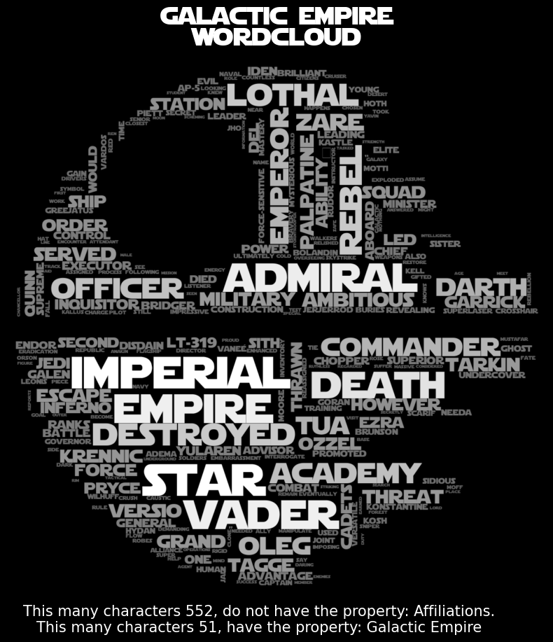
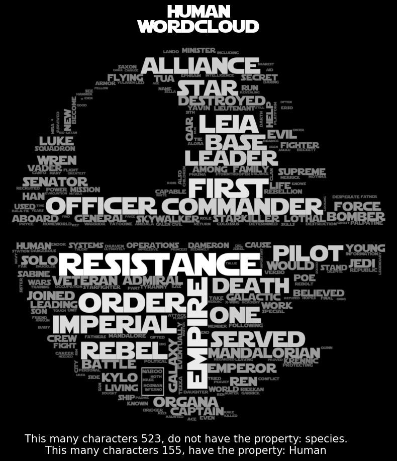

If you haven't already, read the Characters section first; that will give you a much better idea of what this page does.
Word Analysis of groups
Choosing groups:
We chose the 2-5 categories Affiliations, Appearances, Locations, Gender, and Species to be the most interesting categories to look at in the Star Wars universe. In these different categories we'll look at the wordclouds of the top 2-5 groups within the different categorizations.
This type of semantic analysis helps us to get a better understanding of the different groups within the Star Wars universe. Visualizing which words are the most important within the different groups and how they differ from each other.
All these 2-5 property/categories are gathered from our descriptions dataset.
Affiliations:
The affiliation property is probably the most interesting property to look at in the Star Wars universe because of the type of stories the Star Wars movies and series most often depict, that of a war between good and evil.
With political drama, back stabbing, war etc. So the affiliation property already reveals some of these secret connections between the characters.
Galactic Republic
The Galactic Republic, is the supposedly "democratic" and neutral faction in the Star Wars universe. Some words standout, "Clones" being the Republic's army, "Senate" being the Republic's political body, "Jedi" being the Republic's peacekeepers, "Palpatine" being the Republic's traitor and chancellor, "Separtist" being the opposing faction. Because this faction is the most neutral/encompassing faction, it's wordcloud is also the most mixed.
Jedi Order
For the Jedi Order we see some relevent words to the Jedi, both related directly to the Jedi Order: "Jedi", "Council", "Youngling", "Padawan", "Training", "Master", "Temple", "Lightsaber" etc. But we also less commonly see words related to the enemies of the Jedi: "Dark", "Troopers", "Dooku", and of course also the names of members of the Jedi Order: "Luke", "Anakin", "Skywalker", "Yoda" etc. Overall this wordcloud is very selfcontained.
Galactic Empire
The Galactic Empire is the generally "evil" faction of the Star Wars universe that replace the Republic, where there are some words that clearly weigh more than the rest. One of those categories are the words relating to honorifics and such: "Admiral", "Imperial", "Empire", "Emperor", "Officer", "Darth", "Commander". There are also some very clear combinations of words, "Death" and "Star" because of the Death Star. "Darth" and "Vader" because of Darth Vader.
Rebel Alliance
The Rebel Alliance is the faction opposing the Galactic Empire, and the most prominent words in their wordcloud are heavily related to the different battles and things related to that, like "Hoth", "Endor", "Yavin", "Squadron", "Pilot", "Base", "Rebel", "Rebellion", "Battle", etc. We also see the names of the most prominent members of the Alliance, Luke Skywalker, Leia Organa, Han Solo, etc. Unsuprisingly the wordcloud for the Alliance is also very selfcontained, which is to be expected from a faction that is so focused on one thing and in such opposition by other factions.
The Resistance
The Resistance is the faction opposing the First Order, and the most prominent words in their wordcloud are also related more to that of battle, and is very reminiscent of the observations from the Rebel Alliance, "Resistance", "Leia", "Organa", "Poe", "Base", "Starfighter", "X-wing". Surprisingly enough we don't see the names of the new characters like Finn and Rey even though they are the main characters of the new trilogy. But it makes sense if you look at this with the perspective of Hollywood, where the old familiar characters are still the most important.
Appearances
The appearances property is also interesting to look at when compared to the affiliation property, because it shows how the characters and factions are pretty closely distributed across the different movies and series. Meaning that any single movie will focus on mostly on a single faction, and will therefore also have pretty self contained wordclouds.

For Episodes IV-VI we can see that there's a lot of overlap with the Rebel Alliance, which makes sense since these first Star Wars movies were put a lot of focus on Luke Skywalker and his journey. Throughout the episodes we notice some patterns:
In Episode IV, there are a lot of words related to Tatooine, since that's the location of most of the movie, with some notable mentions of Obi-Wan Kenobi and the Death Star. In Episode V, there's a bigger focus on large scale battles and we find more words in common with the Rebel Alliance like "Hoth", "Rebel" etc. And this is the first time we really meet Darth Vader, which is easily seen in the wordcloud. In Episode VI, we notice mentions of things related to the location Tatooine, and Endor, which are very prominent places in the movie, with words like "Jabba", "Hutt", "Rancor", and "Ewok" being prominent.
In the Star Wars: The Clone Wars, TV series wordcloud we can see things related to the Galactic Republic and the Jedi Order, with the words almost entirely matching a mix of the two, which isn't surprising since the series is focused on those two exact factions. In Episode VII, we focus a lot on The Resistance, and the "Starkiller" + "Base" and the "First" + "Order" etc. and generally matching the Resistance wordcloud.
Locations
While the affiliations and appearances are more interesting to look at from a story perspective, it's also interesting to get an insight into how these different factions connect across different locations.
We quickly spot some connections between the different locations: Coruscant is the planet of the Galactic Republic, and the Jedi Order, which explains the overlap between the two faction's wordclouds. Kamino is the planet of the Clone Army, which explains the overlap between it and the Galactic Republic.
Naboo is a planet where we haven't really explored much about the factions, it predicatbly shows some slight overlap with the Galactic Republic, but is mostly selfcontained. Tatooine is a very prominent location for many of the Star Wars movies, and it also has a lot of overlap with the different movies like Episode IV and VI, and then also the Alliance.
Gender
We thought it'd be interesting to see how different the context of the two genders in the universe was, and there is a noticeable difference.

As can be seen on the wordclouds, the female wordcloud includes a lot of words related to the "Queen", "Padmé", and more word in common with the Rebels. In slight contrast to that, the male wordcloud has many more words directly related to battle and military, which makes sense since most of the characters in the Jedi Council are men and the same goes for the Galactic Empire etc. The protaganist is often male and the antagonist is often male, so I guess this checks out.
Species

In the end we thought it'd be interesting to see how the different species in the Star Wars universe are connected, but since the Star Wars universe is pretty mixed in terms of alien races we thought it'd be interesting to look at. Unfortunately these wordclouds seem to mostly be selfcontained, with the exception of the "Human" wordcloud, which has some overlap with all the other wordclouds, which makes sense since by far most of the main characters in the Star Wars universe are human.